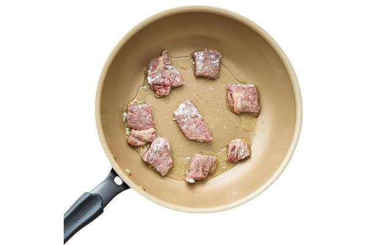
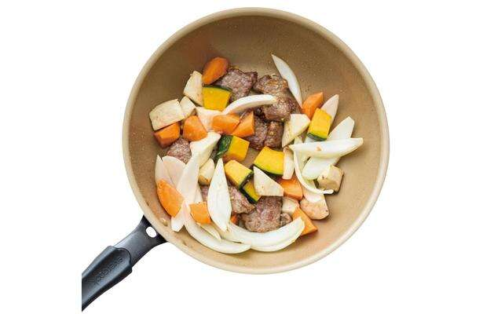
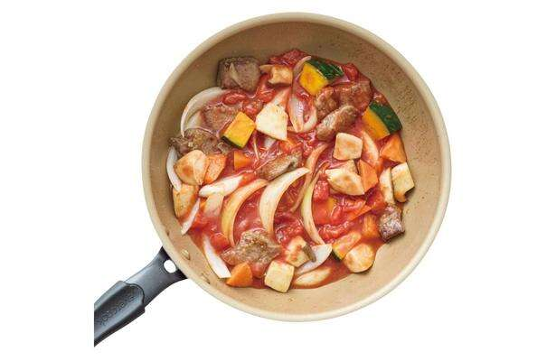

《神传减肥倍增饮食：减掉5公斤，回到10岁的饮食技巧》 （石本哲郎/KADOKAWA）第4弹【共6集】
“Kamiyose”系列诞生了许多成功的减肥者。这是作者、私人教练石本哲郎的第十部作品，也是最新作品。《神传减肥倍增饮食：减掉5公斤，回到10岁的饮食技巧》（角川）。主题是“乘法”，通过结合营养物质来最大化效果。这是一种真正能“时光倒流”的饮食技巧，不仅能帮助你减肥，还能改善皮肤紧致、健康、年轻的外观。通过以下方法，可以期待改善新陈代谢、改善肠道活性、抗衰老等令人愉悦的效果，以达到更高的减肥和返老还童效果！
*本文部分摘录自石本哲郎所著的《神圣减肥倍增饮食：减掉5公斤，倒带10岁的饮食技巧》一书。
维生素A✕维生素E✕锌=抗衰老
想要保持年轻又想减肥，就选牛肩腰肉吧！
牛肩腰肉高蛋白、低脂肪、富含锌！对于那些不喜欢锌含量最高的牡蛎的人来说，要注意牛肩腰肉！ ！
番茄炖牛肉
材料（1人份）
*让牛肉达到室温。
牛肩腰牛排...100g
胡萝卜...50克
洋葱...1/4 颗
Eringi...1 个中等（50 克）
南瓜......50g
蒜末……1/2茶匙
面粉……2茶匙
橄榄油...1汤匙
切好的西红柿罐头……1/2罐
盐...1g
黑胡椒……少许
干欧芹...一些
如何制作
1. 将牛肉切成小块，撒上少许面粉。将胡萝卜切成小块，洋葱切成楔形，王蘑菇切成块，南瓜切成一口大小的小块。

2. 在煎锅中加热橄榄油，炒大蒜。闻到香味后，加入牛肉，煎至两面微黄。

3 将胡萝卜、洋葱、蘑菇和南瓜加入步骤2炒香。

4 将步骤3的番茄罐头和盐加入，盖上锅盖，小火煮10分钟。
5 放入碗中，撒上黑胡椒和干欧芹。